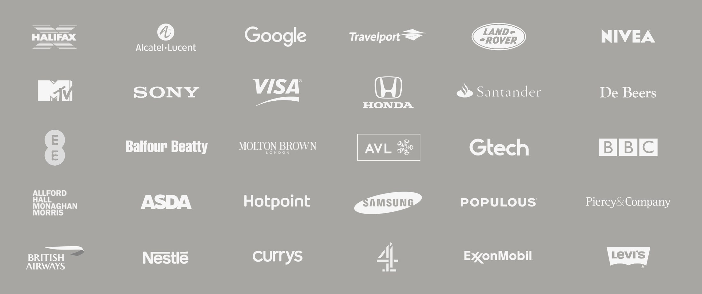

normal
Generative AI
Introducing normal, combining cutting edge AI with award-winning, human filmmaking. Find out more at wearenormal.ai
Live action direction. CGI direction. Creative direction. Cinematography. Editing. Post production.
Guy Nisbett is an award winning, multi-skilled freelance director of ads, branded content and corporates, for global brands.
Trained at BBC Television, he directed a string of top ten music videos before moving into advertising, combining live action, motion graphics and CGI with award winning results. Alongside work with larger crews and post-production facilities, he began shooting and editing many of his films, pushing the boundaries of multi-skilled production. Most recently he embraced AI production, founding NORMAL to handle generative AI focused work. His films span automotive, luxury, travel, architecture, technology, lifestyle, documentary and more, using location and studio shooting, green screen, drones, voice over, interviews, motion graphics, CGI, 360, VR and generative AI. A multi-skilled approach allows him to work flexibly with both large and small teams. All the way from developing creative treatments and scripting, to directing live action and CGI, and delivering remotely from his own suite. He is based in the City of London, UK.

Generative AI
Introducing normal, combining cutting edge AI with award-winning, human filmmaking. Find out more at wearenormal.ai
CPPS Earthquake Education Centre, Switzerland
Combining immersive projections with a sophisticated hydraulic platform driven by seismic data, the CPPS Earthquake Simulator can replicate any earthquake. Together with the INK creative and CGI team, we developed a series of 30 minute films, transporting visitors to the epicentre of history’s most destructive earthquakes, while explaining the science, and training them to survive.
Creative & Script: Guy Nisbett
Co-Director with the INK creative team: Guy Nisbett
Production Company: INK
Client: CPPS
Virgin O2 + Carers UK
WINNER OF TWO EVCOM FILM AWARDS, 2022 NOMINATED FOR TWO EVCOM CLARION AWARDS, 2022
To launch the partnership of Virgin O2 and Carers UK, a dramatised story based on interviews with three carers, with an uplifting twist.
Director & Creative: Guy Nisbett
Production Company: Taylor Made Media
Client: Virgin O2
Producer: Sophie Taylor
Head of Production: Ian McGinty
DoP: Steve Moss
Sound recordist: Sam Diamond
Editing and Post: Guy Nisbett
Levidian - LOOP
Levidian’s clever technology turns the greenhouse gas methane into hydrogen and graphene. Clean energy, and a building block for advanced materials. See how it works in this CGI film, directed for INK.
Director & Creative: Guy Nisbett
Production Company: INK
CGI Production: INK
Client: LEVIDIAN
Resort 2021
A social, online and in-store campaign for the EUDON CHOI Resort 2021 collection, exploring the boundaries of film and photography with a series of seamless, slow motion loops.
Client: EUDON CHOI
The London Grand Prix by Santander
World Champions Lewis Hamilton and Jenson Button imagine a London F1 street race, in an award winning live action and CGI film, directed, scripted and cut by Guy Nisbett.
Production Company & CGI Production: INK
Motion Graphics: Territory Studio
Client: Santander
The Gtech Mountain eBike
Live action, motion graphics and drones in Snowdonia, with voice over provided by Gtech’s founder, Nick Grey. Directed and cut by Guy Nisbett.
Production Company: INK
Client: Gtech
HP Envy X2
Everything you can do with with the Envy x2, including shoot yourself dancing. Directed and cut by Guy Nisbett.
Agency: AMVBBDO
Client: HP
Molton Brown - Tobacco Absolute
Botanist Dr. Mark Spencer explains the allure of the tobacco plant, from a series of films exploring the ingredients of their perfumes. Directed, shot, and cut by Guy Nisbett.
Production Company: Connected Pictures
Client: Molton Brown
BA - Behind the Design
For the launch of the redesigned British Airways cabin, we go ‘behind the design’, to show the passion and attention to detail of the designers, as well as their influences in luxury products. Directed, shot, and cut by Guy Nisbett.
Production Company: Connected Pictures
Client: British Airways
The Copyright Building
An interview lead film without talking heads, based on audio recordings of the architects in conversation with the director. Following its successful launch, The Copyright Building is set to become the UK headquarters of Netflix. Directed, shot, cut and graded by Guy Nisbett.
Production Company: INK
Client: Piercy&Co
Land Rover Future Technologies
Scripted and directed by Guy Nisbett, the Discovery Vision Concept is brought to life using CGI, voice over, and artful sound design.
Production Company & CGI Production: INK
Client: Land Rover
ENEC Nuclear Reactor Tour
Designed to be viewed in 3D using the Samsung Gear, this 360 film gives a guided tour of the Barakah reactor, explaining how electricity is generated. Scripted and directed by Guy Nisbett, the film offers an audience of students and school children a compelling and comfortable experience of VR.
On mobile devices, for the best experience watch the film in the YouTube app, here.
Production Company & CGI Production: INK
Client: ENEC
Winstanley & York Road Masterplan
The masterplan for a new district in south west London is brought to life with CGI, motion graphics and voice over in a film scripted, directed and cut by Guy Nisbett.
Production Company & CGI Production: INK
Client: Balfour Beatty